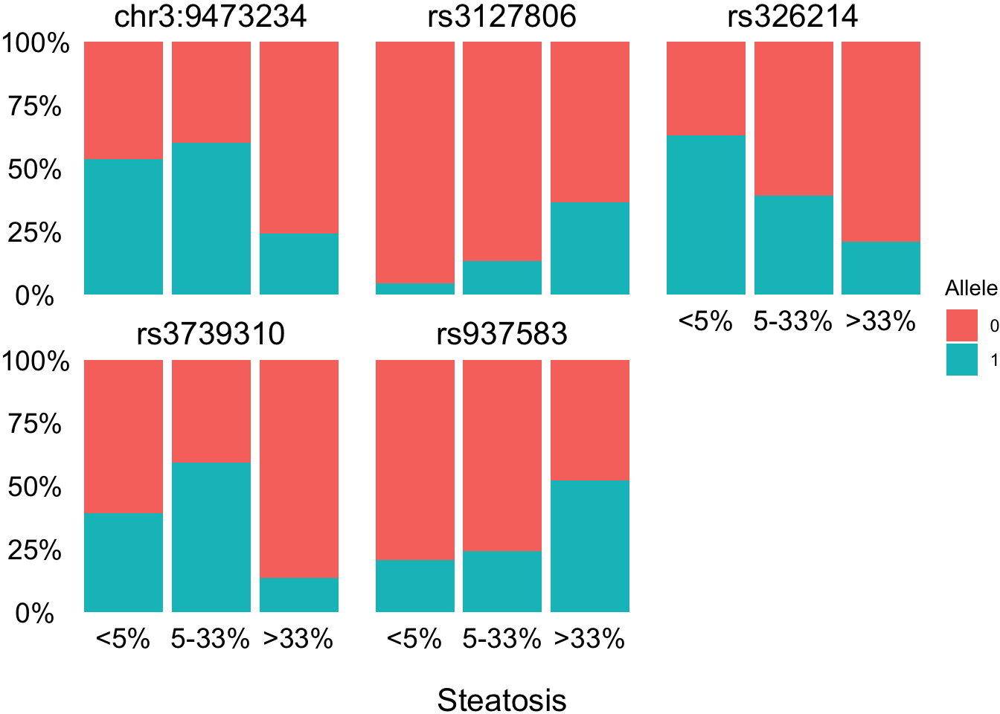

Genome-wide association studies (GWAS) have identified loci associated with NAFLD, but these findings often have modest effect sizes and explain only a small portion of the heritability of NAFLD, which is estimated to be between 22–50% (Anstee et al., 2013). While polygenic risk scores (PRS) have shown promise in predicting risk for complex traits (Trépo et al., 2020), their application to NAFLD has yet to yield robust results (Kawaguchi et al., 2018).
To enhance our understanding of the genetic basis of NAFLD, mapping expression quantitative trait loci (eQTLs) provides a powerful approach. eQTL analysis links specific genetic variants with changes in gene expression, offering interpretable molecular connections between genetic variants and traits of interest (Albert et al., 2015; Yoo et al., 2021). This method significantly increases statistical power, allowing the detection of thousands of eQTLs even in relatively small sample sizes (Montgomery et al., 2010; Yoo et al., 2021).
In the context of obesity, where both adipose tissue and liver function are often compromised, integrating eQTL analysis within a multi-omic framework is essential. The goal of this study is to identify and characterize disease-specific eQTLs in patients with steatosis using gene expression in the liver and whole exome sequencing data. We aim to uncover novel genetic mechanisms underlying NAFLD and to improve the accuracy of genetic risk prediction for this complex disease.
4.2 Methods
Transcriptome and genome data were obtained as detailed in Appendices 2 and 3, respectively. No genotype imputation was performed. These datasets were integrated for expression quantitative trait loci (eQTL) mapping using R and MatrixEQTL (version 2.3) (Shabalin, 2012), with sex included as a covariate.
To identify steatosis-related eQTLs, the cohort was divided into two groups: no-steatosis (liver fat content < 5%, n = 29) and steatosis (liver fat content > 33%, n = 25). eQTL mapping was conducted separately within each group. eQTLs identified in both groups were excluded from further analysis to focus on steatosis-specific eQTLs.
To refine the list of steatosis-specific eQTLs, we selected the most significant SNP per gene, retaining only those eQTLs with an absolute β coefficient greater than 10. These eQTLs were further filtered by removing any SNPs that did not meet Hardy-Weinberg equilibrium (HWE) criteria (HWE p-value < 0.0001).
A genome-wide association analysis was then performed between the identified SNPs and the dependent variable (steatosis) in the whole cohort using five different genetic models (inheritance patterns): codominant, dominant, recessive, overdominant, and log-additive, utilizing the R package SNPassoc (version 2.1.0) (Moreno et al., 2022). For each eQTL, the model with the lowest p-value was selected for further analysis. Finally, the results were visualized by plotting the association data across three histologically defined steatosis groups (<5%, 5-33%, and >33%). Genotypes were coded as 0, 1, or 2, corresponding to the number of minor alleles present at each SNP.
4.3 Results
Code
#################### Genotype data ####################### Convert PLINK to GDS formatsnpgdsBED2GDS("data/only_snps_cleaned.bed", "data/only_snps_cleaned.fam","data/only_snps_cleaned.bim", out.gdsfn ="genotype.gds")# Open the GDS filegenofile <-snpgdsOpen("genotype.gds")#################### phenotype data #####################pheno <-read_csv("data/20240813_metadata.csv") |>distinct(sample, .keep_all = T) |>mutate(sample =paste0("DNA_",sample,"_","DNA_",sample))|># recode steatosis categories into a new variable with only 3 levelsmutate(steatosis_3cat=fct_recode(Steatosis,`>33%`=">33-66%",`>33%`=">66%"),steatosis_3cat=factor(steatosis_3cat,levels=c("<5%", "5-33%", ">33%"))) |># recode sex as the .fam file mutate(sex =fct_recode(sexo, "1"="hombre", "2"="mujer")) |>column_to_rownames("sample") steato <- pheno |>filter(steatosis_3cat ==">33%") |>pull(prefix)healthy <- pheno |>filter(steatosis_3cat =="<5%") |>pull(prefix)########################################### RNAseq count data ##################################################################counts0 <-read.delim("data/salmon.merged.gene_counts.tsv")filter <-rowSums(counts0 >=30) >=30counts_filtered <- counts0[filter,] |>round(digits =0)########################################################## Map ENSEMBL gene IDs to HGNC symbols for compatibility with gene annotationssymb <-mapIds(org.Hs.eg.db, keys =str_sub(rownames(counts_filtered),1,15),column =c("SYMBOL"), keytype ="ENSEMBL")# filter out untranslated genescounts_na <- counts_filtered |>mutate(symbol = symb, .before =1) |>filter(!is.na(symbol)) # sum the counts of duplicated genes (normaly pseudogenes)counts <- counts_na |>group_by(symbol) |>mutate(across(everything(), \(x) sum(x))) |>distinct(symbol,.keep_all = T) |>ungroup() |>column_to_rownames("symbol")
4.3.1 Analysis of eQTL
Code
expression_liver <- counts |>select(starts_with("L_")) sample_id_liver <-paste0("DNA_",str_sub(names(expression_liver),3,5),"_","DNA_",str_sub(names(expression_liver),3,5))# Extract genotype data from GDS filegeno_data <-snpgdsGetGeno(genofile, sample.id=sample_id_liver, snp.id=NULL, with.id=TRUE)# Extract the genotype matrixgeno_matrix <- geno_data$genotype# Assign row and column names correctlyrownames(geno_matrix) <- geno_data$sample.id # Row names: sample IDscolnames(geno_matrix) <- geno_data$snp.id # Column names: SNP IDs# Reorder geno_matrix pheno with the same order than the expression matrixgeno_matrix_liver <- geno_matrix[sample_id_liver,]pheno_liver <- pheno[sample_id_liver,]colnames(expression_liver) <- sample_id_liver
Code
# Define model (linear model with covariates, including treatment)model <- modelLINEAR_CROSS# Prepare SNP, gene, and covariate data for MatrixEQTLSNP <- SlicedData$new()SNP$CreateFromMatrix(as.matrix(t(geno_matrix_liver)))gene <- SlicedData$new()gene$CreateFromMatrix(as.matrix(expression_liver))cvrt <- SlicedData$new()cvrt$CreateFromMatrix(as.matrix(t(as.numeric(pheno_liver$sex))))# Run the eQTL analysiseqtl_results <-Matrix_eQTL_main(snps = SNP,gene = gene,cvrt = cvrt,output_file_name ="eqtl_results_liver.txt",pvOutputThreshold =1e-5,useModel = model,verbose =TRUE,pvalue.hist =TRUE,min.pv.by.genesnp =FALSE)### The model is saved as it need a lot of memory to be executed
Code
# Load the saved eQTL results from the liver data fileeqtl_liver <-read_delim("data/eqtl_results_liver.txt", delim ="\t", escape_double =FALSE, trim_ws =TRUE)# Define the false discovery rate (FDR) threshold and the absolute beta coefficient thresholdfdr <-0.001b <-10# Filter the eQTL results to include only those with an FDR below the threshold # and an absolute beta coefficient above the thresholdeqtl_top_liver <- eqtl_liver |>filter(FDR < fdr, abs(beta) > b )# Group by SNP and count the number of distinct genes associated with each SNPt <- eqtl_top_liver |>group_by(SNP) |>summarize(n =n_distinct(gene))# Calculate the percentage of SNPs that affect multiple genesmultiple <-round(sum(t$n >1) /nrow(t) *100, digits =1)
After quality assessment of the genotype and liver transcriptome data from 79 individuals with obesity , 14564 transcripts and 48852 SNPs were subject eQTL mapping using an additive linear model. We identified 1244 genes with eQTLs (cis and trans) at FDR = 0.001, and 4031 significant SNPs. Among the eQTL-SNPs, 57.7% had an effect on multiple genes, , highlighting the potential pleiotropy of these genetic variants in the regulation of gene expression.
This approach allowed us to uncover a significant number of eQTLs with robust statistical support, offering insights into the genetic regulation of liver gene expression in individuals with obesity. The high percentage of SNPs affecting multiple genes suggests complex regulatory mechanisms at play, which may contribute to the pathogenesis of related diseases.
4.3.2 Steatosis-eQTL
Code
# Extract liver RNAseq data from individuals with steatosisexpression_steato <- counts |>select(all_of(steato))sample_id_steato <-paste0("DNA_",str_sub(names(expression_steato),3,5),"_","DNA_",str_sub(names(expression_steato),3,5))# Extract genotype data from GDS filegeno_data <-snpgdsGetGeno(genofile, sample.id=sample_id_steato, snp.id=NULL, with.id=TRUE)# Extract the genotype matrixgeno_matrix <- geno_data$genotype# Assign row and column names correctlyrownames(geno_matrix) <- geno_data$sample.id # Row names: sample IDscolnames(geno_matrix) <- geno_data$snp.id # Column names: SNP IDs# Reorder geno_matrix pheno with the same order than the expression matrixgeno_matrix <- geno_matrix[sample_id_steato,]pheno_steato <- pheno[sample_id_steato,]colnames(expression_steato) <- sample_id_steato
Code
# Define model (linear model with covariates, including treatment)model <- modelLINEAR_CROSS# Prepare SNP, gene, and covariate data for MatrixEQTLSNP <- SlicedData$new()SNP$CreateFromMatrix(as.matrix(t(geno_matrix)))gene <- SlicedData$new()gene$CreateFromMatrix(as.matrix(expression_steato))cvrt <- SlicedData$new()cvrt$CreateFromMatrix(as.matrix(t(as.numeric(pheno_steato$sex))))# Run the eQTL analysiseqtl_results <-Matrix_eQTL_main(snps = SNP,gene = gene,cvrt = cvrt,output_file_name ="eqtl_results_steato.txt",pvOutputThreshold =1e-5,useModel = model,verbose =TRUE,pvalue.hist =TRUE,min.pv.by.genesnp =FALSE)# Check the results# summary(eqtl_results)# plot(eqtl_results)
Code
# Load the saved eQTL results from the steatosis data fileeqtl_steato <-read_delim("data/eqtl_results_steato.txt", delim ="\t", escape_double =FALSE, trim_ws =TRUE)# Filter the eQTL results to include only those with an FDR below the threshold and an absolute beta coefficient above the thresholdeqtl_top_steato <- eqtl_steato |>filter(FDR < fdr, abs(beta) > b )# Group by SNP and count the number of distinct genes associated with each SNPt <- eqtl_top_steato |>group_by(SNP) |>summarize(n =n_distinct(gene))# Calculate the percentage of SNPs that affect multiple genesmultiple <-round(sum(t$n >1) /nrow(t) *100, digits =1)# Select the most significant SNP per gene, keeping only the SNP with the lowest FDR and highest absolute beta coefficienteqtl_single_gene_steato <- eqtl_top_steato |>group_by(SNP) |>arrange(FDR, desc(beta)) |>ungroup() |>distinct(gene, .keep_all =TRUE)
In this subgroup of 25 individuals with obesity and statosis , 14564 transcripts and 48852 SNPs were subject eQTL mapping. We identified 1191 genes with eQTLs (cis and trans) at FDR = 0.001, and 18220 significant SNPs. Among the eQTL-SNPs, 70.2% had an effect on multiple genes. This subset of eQTLs provides valuable insights into the specific genetic variants that may contribute to the development and progression of liver steatosis in obese individuals. The high proportion of SNPs affecting multiple genes underscores the complexity of the genetic regulation of liver gene expression in the context of steatosis.
4.3.3 Non steatosis-eQTL
Code
# Select RNAseq data for the non-steatosis subsetexpression_healthy <- counts |>select(all_of(healthy))sample_id_healthy <-paste0("DNA_",str_sub(names(expression_healthy),3,5),"_","DNA_",str_sub(names(expression_healthy),3,5))# Extract genotype data from GDS filegeno_data <-snpgdsGetGeno(genofile, sample.id=sample_id_healthy, snp.id=NULL, with.id=TRUE)# Extract the genotype matrixgeno_matrix <- geno_data$genotype# Assign row and column names correctlyrownames(geno_matrix) <- geno_data$sample.id # Row names: sample IDscolnames(geno_matrix) <- geno_data$snp.id # Column names: SNP IDs# Reorder geno_matrix pheno with the same order than the expression matrixgeno_matrix <- geno_matrix[sample_id_healthy,]pheno_healthy <- pheno[sample_id_healthy,]colnames(expression_healthy) <- sample_id_healthy
Code
# Define model (linear model with covariates, including treatment)model <- modelLINEAR_CROSS# Prepare SNP, gene, and covariate data for MatrixEQTLSNP <- SlicedData$new()SNP$CreateFromMatrix(as.matrix(t(geno_matrix)))gene <- SlicedData$new()gene$CreateFromMatrix(as.matrix(expression_healthy))cvrt <- SlicedData$new()cvrt$CreateFromMatrix(as.matrix(t(as.numeric(pheno_healthy$sex))))# Run the eQTL analysiseqtl_results <-Matrix_eQTL_main(snps = SNP,gene = gene,cvrt = cvrt,output_file_name ="eqtl_results_healthy.txt",pvOutputThreshold =1e-5,useModel = model,verbose =TRUE,pvalue.hist =TRUE,min.pv.by.genesnp =FALSE)# Check the results# summary(eqtl_results)# plot(eqtl_results)
Code
# Load the eQTL results from the non-steatosis (healthy) data fileeqtl_healthy <-read_delim("data/eqtl_results_healthy.txt", delim ="\t", escape_double =FALSE, trim_ws =TRUE)# Filter the eQTL results to include only those with an FDR below the threshold and an absolute beta coefficient above the thresholdeqtl_top_healthy <- eqtl_healthy |>filter(FDR < fdr, abs(beta) > b )# Group by SNP and count the number of distinct genes associated with each SNPt <- eqtl_top_healthy |>group_by(SNP) |>summarize(n =n_distinct(gene))# Calculate the percentage of SNPs that affect multiple genesmultiple <-round(sum(t$n >1) /nrow(t) *100, digits =1)# Select the most significant SNP per gene, keeping only the SNP with the lowest FDR and highest absolute beta coefficienteqtl_single_gene_healthy <- eqtl_top_healthy |>group_by(SNP) |>arrange(FDR, desc(beta)) |>ungroup() |>distinct(gene, .keep_all =TRUE)
In the non-steatosis subgroup, encompassed with 29 individuals with obesity , 14564 transcripts and 48852 SNPs were subject eQTL mapping. We identified 764 genes with eQTLs (cis and trans) at FDR = 0.001, and 14510 significant SNPs. Among the eQTL-SNPs, 56.2% had an effect on multiple genes.
This analysis allowed us to identify a significant number of eQTLs specific to individuals without steatosis, providing insights into the genetic regulation of liver gene expression in a healthier metabolic context. The lower proportion of SNPs affecting multiple genes compared to the steatosis group suggests potential differences in the genetic architecture underlying gene expression in individuals with and without liver steatosis.
Code
# Close the GDS file after analysis to free resourcesclosefn.gds(genotype.gds) ### como se llama ???
4.3.4 Identification of Steatosis-Specific eQTLs and Their Association with Steatosis Phenotypes
Code
# Identify SNPs that are unique to the steatosis group by finding the difference between the steatosis and healthy SNP setsdif <-setdiff(eqtl_single_gene_steato$SNP, eqtl_single_gene_healthy$SNP)# Create a genotype-phenotype matrix for the liver samples, selecting only the SNPs unique to the steatosis groupassoc_liver0 <- geno_matrix_liver |>as.data.frame() |>select(all_of(dif)) |>mutate(steatosis_3cat = pheno_liver$steatosis_3cat, # Add the steatosis phenotype in three categoriessteatosis =ifelse(steatosis_3cat ==">33%", 1, 0), # Create a binary steatosis variable (>33% = 1, otherwise = 0)sex = pheno_liver$sexo, .before =1) # Include sex as a covariate# Set up the SNP data for association analysis, labeling genotypes as 0, 1, 2assoc_liver <-setupSNP(assoc_liver0, colSNPs =4:ncol(assoc_liver0), name.genotypes =c(0, 1, 2))# Filter SNPs that meet the Hardy-Weinberg equilibrium criteria (HWE >= 0.0001)ok_liver <-summary(assoc_liver, print = F) |>filter(HWE >=0.0001) # Prepare the final dataset for association analysis, selecting relevant variables and SNPsassoc_liver <- assoc_liver |>select(steatosis_3cat, steatosis, sex, rownames(ok_liver))# Perform genome-wide association analysis using multiple genetic models and select the best model for each SNPset.seed(89)final0 <-WGassociation(steatosis ~ sex, assoc_liver[, 1:ncol(assoc_liver)], mc.cores =8) # Process the association results to identify significant SNPsfinal <- final0 |>as.data.frame() |>rownames_to_column("snp") |>pivot_longer(codominant:`log-additive`, names_to ="model", values_to ="pvalue") |>group_by(snp) |>arrange(pvalue, .by_group =TRUE) |>distinct(snp, .keep_all =TRUE) |>filter(!is.na(pvalue)) |>mutate(fdr =p.adjust(pvalue, method ="fdr")) |># Adjust p-values for multiple testing using FDRfilter(fdr <0.01) |>separate_wider_delim(snp, names =c("chr", "BP"), delim =".", cols_remove = F) |>mutate(BP =as.integer (BP),position =str_c(str_replace(chr, "chr", ""), BP, BP, sep =":"), # Format the SNP positionssnp =str_replace(snp, "\\.", "\\:"))
To identify steatosis-specific eQTLs, we first determined the SNPs that were unique to the steatosis group by comparing eQTLs identified in individuals with and without steatosis. This analysis revealed a set of 760 SNPs specific to the steatosis group.
Next, we performed a genome-wide association analysis on these steatosis-specific SNPs using genotype data from the liver samples. The analysis included a binary steatosis phenotype, where individuals with liver fat content greater than 33% were classified as having steatosis. The association analysis was conducted using multiple genetic models (codominant, dominant, recessive, overdominant, and log-additive), and for each SNP, the model with the lowest p-value was selected.
To ensure robustness, only SNPs that passed the Hardy-Weinberg equilibrium filter (HWE ≥ 0.0001) were included in the final analysis. After adjusting for multiple testing using the false discovery rate (FDR) method, we identified 5 significant SNPs associated with the steatosis phenotype at an FDR threshold of 0.01. These results highlight specific genetic variants that may play a critical role in the development and progression of steatosis, offering potential targets for further investigation in the context of non-alcoholic fatty liver disease (NAFLD).
These SNPs were further annotated using biomaRt to map them to corresponding genes and reference SNP IDs. The final list of steatosis-specific eQTLs provided insights into the genetic mechanisms underlying steatosis in the liver, revealing potential candidate genes for further study.
In the analysis of eQTLs associated with liver steatosis, we observed significant differences in allele distribution across the three steatosis categories (<5%, 5-33%, and >33%) (Table 4.1). The alleles are coded as 0 for the major allele and 1 for the minor allele; no homozygous (2) minor allele carriers were found in our cohort, likely due to the small sample size.
Code
# Use biomaRt to retrieve additional SNP information, including gene associationsensembl <- biomaRt::useEnsembl(biomart ="snps", dataset ="hsapiens_snp")snp_mart <- biomaRt::getBM(attributes =c('chrom_start','refsnp_id',"ensembl_gene_stable_id", 'chr_name', 'allele', "allele_1"),filters ='chromosomal_region', values = final$position ,mart = ensembl) |>distinct(chrom_start, .keep_all = T)# Map Ensembl gene IDs to gene symbolsgene_symbol =mapIds(org.Hs.eg.db, keys = snp_mart$ensembl_gene_stable_id,column =c("SYMBOL"), keytype ="ENSEMBL")# Integrate SNP annotation with association results, including reference SNP IDsfinal <- final |>left_join(snp_mart, by =c("BP"="chrom_start")) |>mutate(rfsnp =ifelse(is.na(refsnp_id), snp, refsnp_id))# Prepare the eQTL data for visualization and comparison across steatosis groupseqtl <- assoc_liver0 |>select(steatosis, steatosis_3cat, sex, final$snp) |>mutate(across(where(is.numeric), \(x) as.character(x))) |>set_names(c("steatosis", "steatosis_3cat", "sex", final$rfsnp))eqtl_long <- eqtl |>pivot_longer(4:ncol(eqtl), values_to ="Allele") |>filter(!is.na(Allele))# Descriptive analysis and table generationcq <-compareGroups(steatosis_3cat ~ . -steatosis - sex, data = eqtl)tq <-createTable(cq, show.all = T)export2md(tq, caption ="")
Table 4.1: Distribution (%) of the major (0) and minor (1) associated with steatosis across different steatosis categories. p.overall: Chi square associated-p value for the comparison between steatosis categories.
[ALL]
<5%
5-33%
>33%
p.overall
N=79
N=29
N=25
N=25
rs3127806:
0.020
0
56 (82.4%)
22 (95.7%)
20 (87.0%)
14 (63.6%)
1
12 (17.6%)
1 (4.35%)
3 (13.0%)
8 (36.4%)
rs326214:
0.009
0
43 (58.1%)
10 (37.0%)
14 (60.9%)
19 (79.2%)
1
31 (41.9%)
17 (63.0%)
9 (39.1%)
5 (20.8%)
rs937583:
0.029
0
54 (68.4%)
23 (79.3%)
19 (76.0%)
12 (48.0%)
1
25 (31.6%)
6 (20.7%)
6 (24.0%)
13 (52.0%)
chr3:9473234:
0.024
0
42 (53.8%)
13 (46.4%)
10 (40.0%)
19 (76.0%)
1
36 (46.2%)
15 (53.6%)
15 (60.0%)
6 (24.0%)
rs3739310:
0.008
0
45 (62.5%)
17 (60.7%)
9 (40.9%)
19 (86.4%)
1
27 (37.5%)
11 (39.3%)
13 (59.1%)
3 (13.6%)
For SNP rs3127806 in the PLCL2 gene, the frequency of the minor allele (1) increased with higher steatosis, indicating a potential role in cellular signaling related to steatosis (p = 0.020). SNP rs326214 in the GCKR gene, known for its involvement in glucose metabolism, showed a significant association with higher steatosis severity (p = 0.009). Similarly, rs937583 in the SLC16A1 gene, linked to monocarboxylate transport, demonstrated an increasing frequency of the minor allele with greater steatosis (p = 0.029). SNP chr3:9473234 in the RHOA gene, which regulates cellular structure and migration, also showed significant allele distribution differences (p = 0.024). Lastly, rs3739310 in the TM6SF2 gene, associated with liver fat metabolism, displayed a significant association with steatosis severity (p = 0.008). These findings highlight the influence of metabolic pathways in the genetic predisposition to liver steatosis (Figure 4.1).
Code
# Visualization: Bar plot showing the distribution of alleles across steatosis categoriesggplot(eqtl_long, aes(x = steatosis_3cat, fill = Allele)) +geom_bar(position ="fill") +scale_y_continuous("", labels = scales::percent_format()) +xlab("\nSteatosis")+theme_void() +theme(axis.title =element_text(size =16),axis.text =element_text(size =14),strip.text =element_text(size =16)) +facet_wrap(~name, ncol =3)

Figure 4.1: Barplot with the distribution (%) of the major (0) and minor (1) associated with steatosis across different steatosis caetgories.
4.3.5 Conclusion
In conclusion, our study identified significant expression quantitative trait loci (eQTLs) associated with liver steatosis by leveraging whole exome sequencing and transcriptomic data from individuals with obesity. We observed that a substantial proportion of eQTL-SNPs have pleiotropic effects, influencing multiple genes, which underscores the complex genetic architecture underlying this condition. By distinguishing steatosis-specific eQTLs from those present in non-steatosis individuals, we have highlighted key genetic variants that may contribute to the pathogenesis of liver steatosis. These findings offer valuable insights into the molecular mechanisms of steatosis and provide a foundation for future research aimed at developing targeted therapeutic interventions for non-alcoholic fatty liver disease (NAFLD).
Albert, F. W., & Kruglyak, L. (2015). The role of regulatory variation in complex traits and disease. Nature Reviews Genetics, 16(4), 197–212. doi: 10.1038/nrg3891
Anstee, Q. M., & Day, C. P. (2013). The genetics of NAFLD. Nature Reviews Gastroenterology & Hepatology, 10(11), 645–655. doi: 10.1038/nrgastro.2013.182
Kawaguchi, T., Shima, T., Mizuno, M., Mitsumoto, Y., Umemura, A., Kanbara, Y., Tanaka, S., Sumida, Y., Yasui, K., Takahashi, M., Matsuo, K., Itoh, Y., Tokushige, K., Hashimoto, E., Kiyosawa, K., Kawaguchi, M., Itoh, H., Uto, H., Komorizono, Y., … Okanoue, T. (2018). Risk estimation model for nonalcoholic fatty liver disease in the Japanese using multiple genetic markers. PLOS ONE, 13(1), e0185490. doi: 10.1371/journal.pone.0185490
Montgomery, S. B., Sammeth, M., Gutierrez-Arcelus, M., Lach, R. P., Ingle, C., Nisbett, J., Guigo, R., & Dermitzakis, E. T. (2010). Transcriptome genetics using second generation sequencing in a Caucasian population. Nature, 464(7289), 773–777. doi: 10.1038/nature08903
Trépo, E., & Valenti, L. (2020). Update on NAFLD genetics: From new variants to the clinic. Journal of Hepatology, 72(6), 1196–1209. doi: 10.1016/j.jhep.2020.02.020
Yoo, T., Joo, S. K., Kim, H. J., Kim, H. Y., Sim, H., Lee, J., Kim, H.-H., Jung, S., Lee, Y., Jamialahmadi, O., Romeo, S., Jeong, W.-I., Hwang, G.-S., Kang, K. W., Kim, J. W., Kim, W., & Choi, M. (2021). Disease-specific eQTL screening reveals an anti-fibrotic effect of AGXT2 in non-alcoholic fatty liver disease. Journal of Hepatology, 75(3), 514–523. doi: 10.1016/j.jhep.2021.04.011